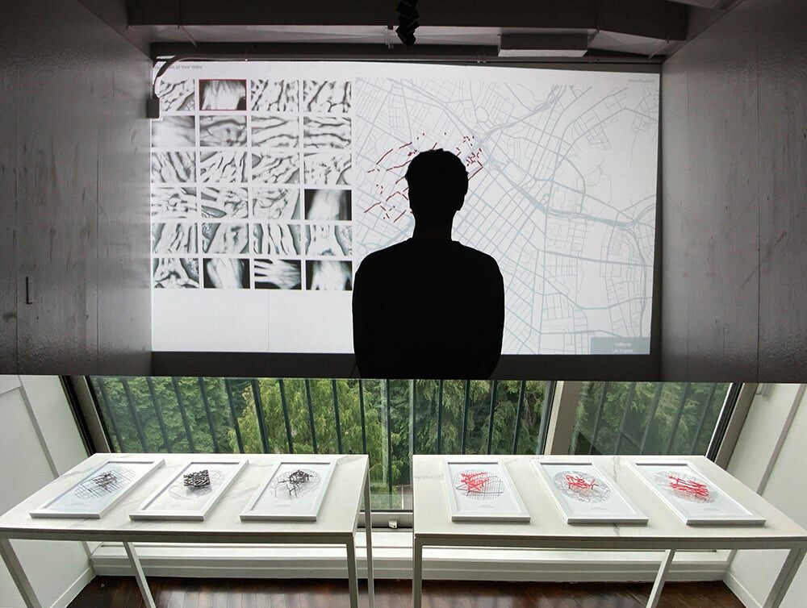
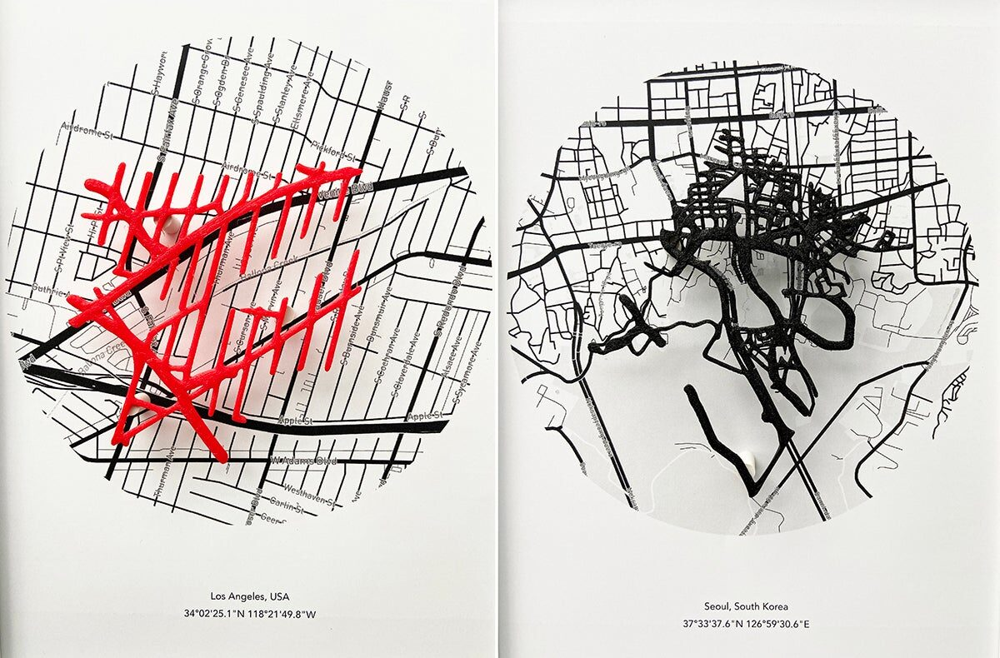
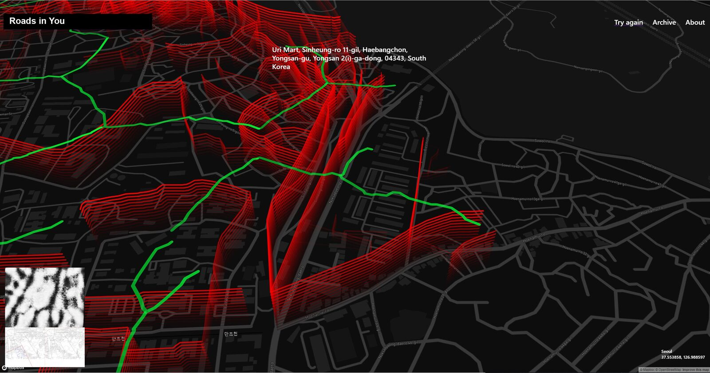
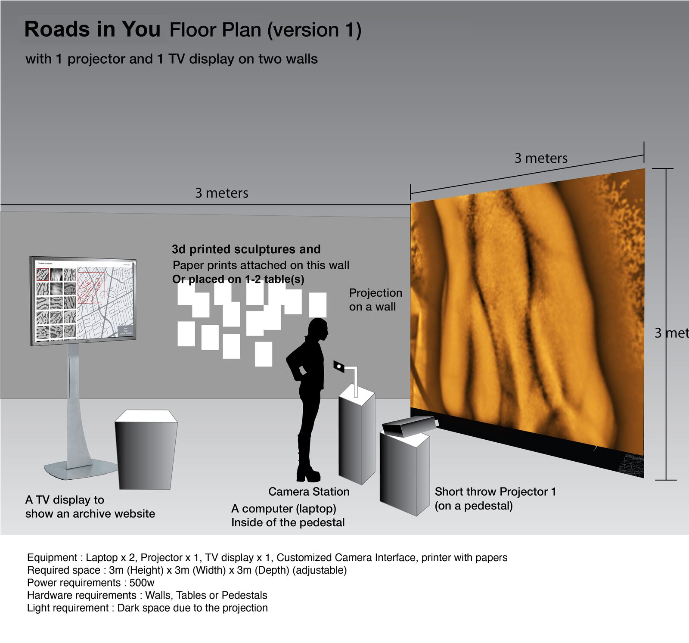
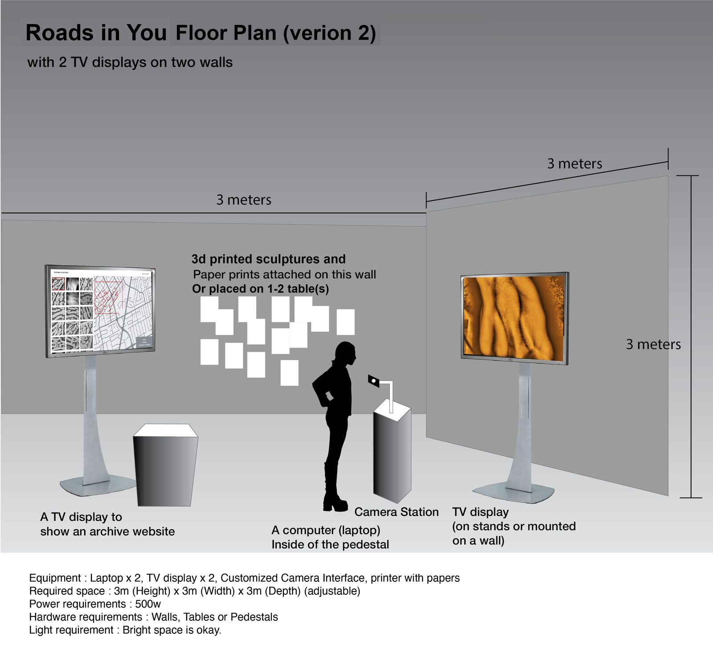
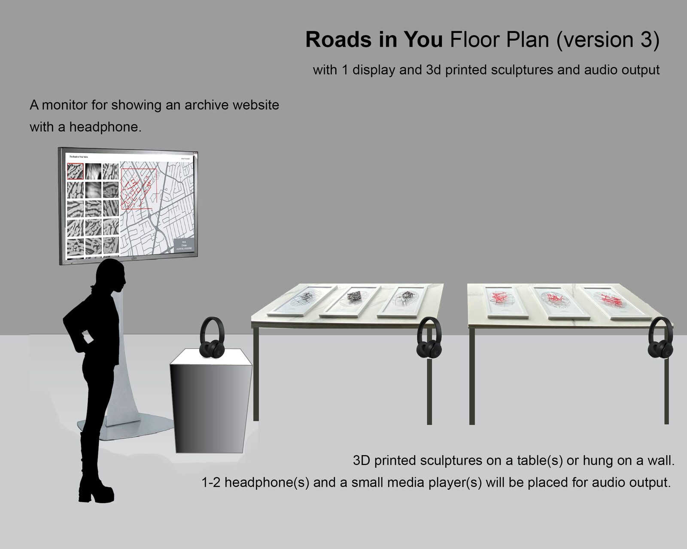

Roads in You
Abstract
Roads in You is an interactive biometric-data artwork that allows participants to scan their veins and find the roads that match their vein lines. The roads resemble how our vein lines are interconnected and how the blood circulates in our bodies in various directions, at various speeds, and in different conditions. This new artwork explores the line segmentation and the structure of veins and compares them to roads in the real world. This artwork includes biometric data sonification on top of 3D map-based visualization and 3D printed sculptures. The vein lines are transformed to sound, and the participants can listen to their unique “audio signature” generated by their veins. By using various visual features extracted by image processing techniques, the branches, length of lines, size of veins, brightness, and contrast of images determine parameters of audio synthesis and create a unique and personalized sound for each participant.
Project Description
Art is always trying to reveal the artist’s personal truth, social or political voice. Many artists use traces, imprints, and index of bodies to reveal hidden narratives, truths, and identification of ourselves in society using the physical traces based on the early modern identification system’s semiotic approaches. It is also my attempt to create an interactive system that allows audience members to recognize who they are. Artistic approaches to revealing meaningful narratives beyond the photocopied images of the biometric data with new digital technologies could give potential answers on the biometric failures and point out the current issues of biometric technologies in society these days.
Roads and paths surround us and are encountered in everyday life, consistently changed by human impact and we always choose where to go from an enormous number of options. The direction, length, and a number of roads determine the process of the journey, the starting point, and the final destination. Road constructions have been one of the huge impacts on earth and it creates significant Anthropocene impact on nature, environments, and climate change. The questions of the roads and paths and their impact on our environments have been inspirations for this project. The similarities between the patterns of veins and roads enabled me to start this project and to experiment in creating virtual connections between the two different paths from the different worlds.
Roads in You is an interactive biometric-data artwork that allows participants to scan their veins and find the roads that match their vein lines. The vein data as one of the fascinating forms of biometric data contain uniquely complicated lines that resemble the roads and paths surrounding us. The roads resemble how our vein lines are interconnected and how the blood circulates in our bodies in various directions, at various speeds, and in different conditions. This new artwork explores the line segmentation and the structure of veins and compares them to roads in the real world.
This newer version of this artwork includes biometric data sonification on top of 3D map-based visualization and 3D printed sculptures. The vein lines are transformed to sound, and the participants can listen to their unique “audio signature” generated by their veins. By using various visual features extracted by image processing techniques, the branches, length of lines, size of veins, brightness, and contrast of images determine parameters of audio synthesis and create a unique and personalized sound for each participant.
The participants can also export the data and keep them as a personalized souvenir (3d printed sculptures) as part of the artistic experience. Through this project, users can explore the correlation between individuals and environments using the hidden patterns under the skin and the vein recognition techniques and image processing. This project also has the potential to lead the way in the interpretation of complicated datasets while providing aesthetically beautiful and mesmerizing audiovisual data-driven design.


Fig. 1. Installation View of Roads in You


Fig. 2. 3D Printed Sculptures of Roads in You


Fig. 3. 3D Map Visualization to show matched roads from vein data
Installation Notes
Please check the three possible floor plans of this artwork below.


Fig. 4. Floor Plan of Roads in You (Version 1)


Fig. 5. Floor Plan of Roads in You (Version 2)
In version 1 and version 2, there are three parts in this artwork:
Part 1: Interactive installation that participants can experience the artwork with their own vein data. There will be a customized infrared camera on the pedestal (or a table) and each participant can scan their body (e.g. wrist) to detect and capture their vein data. A computer or a laptop will be hidden inside the pedestal (or a table). The participant and other audience members can observe the results and experience audiovisual outcomes through a projection or a monitor. Speakers can be used if there is no other emitting sound works nearby. Headphones will be used if the space is not quiet enough.
Part 2: an archive website with a video documentation will be played next to the interactive art installation. Thus, the other participants can watch it and understand the overall concept and story behind the artwork.
Part 3: 3D printed sculptures with audio output. There will be six 3d printed sculptures on the table and a headphone(s). Participants can listen to the sonification of all different vein data through the headphones while watching the 3d printed sculptures. Thus, they can compare the audiovisual outcome of other veins with their data and outcome.
Ideally the floor plan V1 and V2 require two walls with minimum space dimension (width 3 meter x depth 3 meter x height 5 meter.)
If it is not possible to implement the floor plan V1 and V2, a floor plan V3 (image is shown below) can be an alternative option with easy and simple setup.


Fig. 6. Floor Plan of Roads in You (Version 3)
The setup will be simpler than V1 and V2. It includes 3d printed sculptures, audio output and an archive website where participants can listen to the sound of many different veins and understand the concept of the artwork. A short video documentation to explain the process and ideas behind this artwork can be added and looped with the archive website on the same display.
This work can be exhibited at various places in the university environment. The ideal location is an enclosed room with at least one wall or projection wall. However, a monitor(s) and 3D printed sculptures can be hung on hallways. Due to the interactivity and sound, the indoor environment is ideal than outdoor venues. This work doesn’t use any internet connection or network.
This work requires a full one day or two days to set up. De-installation will take a few hours.
Installation Requirements
The interactive version of this artwork requires one or two displays (projections or monitors) and one or two computers (laptops).
Table I. Equipment Requirements | Who can prepare |
|---|---|
Computer (Laptop) | Artist |
Customized Infrared camera interface | Artist |
1 or 2 Projector or Monitor | Organization |
Speakers or Heaphones | Organization or Artist |
3D printed sculptures | Artist |
Cables (power extension cables, HDMI cables) | Organization |
Table(s) or Pedestal(s) | Organization |
Feasibility
This work Roads in You was virtually exhibited in 2020 and 2021 at three locations. Unfortunately, due to the pandemic, this work was not exhibited on site yet. However, the work was informally exhibited for user testing in August 2020 in Seoul, South Korea. 15 participants experienced this work at that time and shared productive feedback about the artwork. Please check this list of previous exhibitions that this work was presented virtually.
ACM TEI 2021 art exhibition “Intangible losses”: https://tei.acm.org/2021/attend/art-track/
Virtual exhibition “Intangible losses” at 5020 gallery, Salzburg, Austria https://5020.info/programm/virtual-exhibition-intangible-losses
ACM SIGGRAPH ASIA 2020: https://sa2020.siggraph.org/en/attend/art-gallery/session_slot/222/2
Media
Video:
Project Website: http://yoonchunghan.com/portfolio/Veins.html
Acknowledgments
This work was supported by the research grants from San Jose State University.
Compliance with Ethical Standards
Human vein data is the input source for this artwork. However, the vein data is not saved when it is exhibited in a gallery or similar settings. The vein data is only saved after permission from participants is acquired. The saved data (in rare cases, not in this NIME 2021 installation) will be used only for the purpose of research and user testing. In this case, there will be a written message next to the artwork clearly mentioning the acquiring process and how the data will be used, and the participants need to sign before experiencing the artwork. Most of the time, the vein data is not saved when the artwork is exhibited in a public space, and the vein data on the screen is overwritten after the next participant scans his/her vein data. Therefore, there will be no privacy concerns or ethical issues in this artwork and artistic experience.